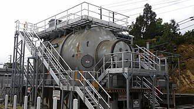
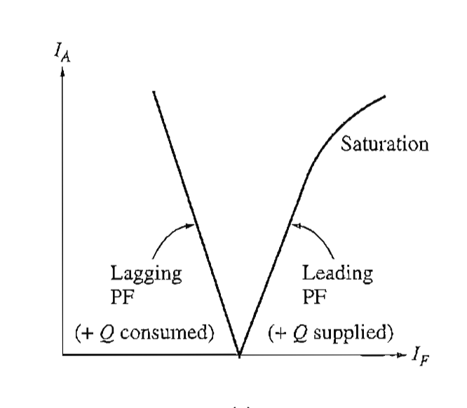

-
Synchronous Condenser
2026-08-10
One of the way used to improve the power factor of a power system is by using synchronous condenser, So what exactly is asynchronous condenser?
A synchronous condenser (sometimes called synchronous capacitor or synchronous compensator) is a DC-excited synchronous motor, whose shaft is not connected to anything but spins freely. Its purpose is not to convert electric power to mechanical power or vice versa, but to supply reactive power to the system, and to correct the power factor of the power system. Its field is controlled by a voltage regulator to either generate or absorb reactive power as needed to adjust the grid's voltage, or to improve power factor.
The V curve of a synchronous capacitor
The V curve of a synchronous motor is a graph that shows the relationship between armature current and field current. Since the real power supplied to the machine is zero (except for losses), at unity power factor the armature current Ia = 0. As the field current is increased above that point, the line current and the reactive power supplied by the motor increases in a nearly linear fashion until saturation is reached.
-
Circuit Breacker in Power System
Circuit breaker in power system are quite similar to that in our houses circuit box , but... -
Instrument Transformers
In power systems, currents and voltages are extremely high. Therefore, direct measurement with... -
Synchronous Generator Reactance
When calculating the short circuit current for a synchronous generator, we use sub-transient...
Related Posts
References
- Electric Machinery Fundmentals by Stephen J. Chapman
- Wikipedia V curve
- Wikipedia Synchronous condenser